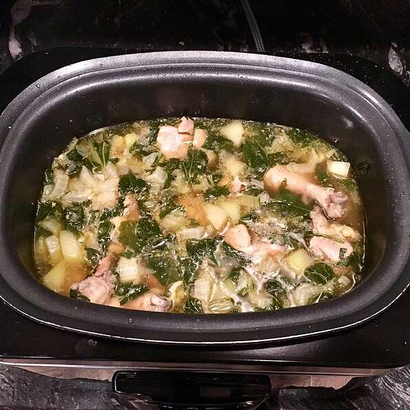

Chicken Tinola

Description
This is a easy one-pot dish from the Philippines. It contains meat and vegetables all cooked together in one savory dish.
Ingredients
- 1 tablespoon cooking oil
- 1 onion, chopped
- 2 cloves garlic, minced
- 1 (1 1/2 inch) piece fresh ginger, peeled and thinly sliced
- 1 tablespoon fish sauce
- 3 pounds chicken legs and thighs, rinsed and patted dry
- 2 (14 ounce) cans chicken broth
- 1 chayote squash, peeled and cut into bite-sized pieces
- salt and pepper to taste
- 1 head bok choy, chopped
- ½ pound spinach
Steps
- Heat the oil in a large pot over medium heat; cook and stir the onion and garlic in the hot oil until fragrant.
- Quickly stir the ginger and fish sauce into the onion and garlic mixture before adding the chicken; cook together for 5 minutes.
- Pour the chicken broth over the mixture and cook another 5 minutes.
- Add the chayote to the mixture and simmer until the chicken is no longer pink in the center, about 10 minutes more.
- Season with salt and pepper.
- Add the bok choy and spinach; cook until the spinach is just wilted, 1 to 2 minutes. Serve hot.
Back to homepage